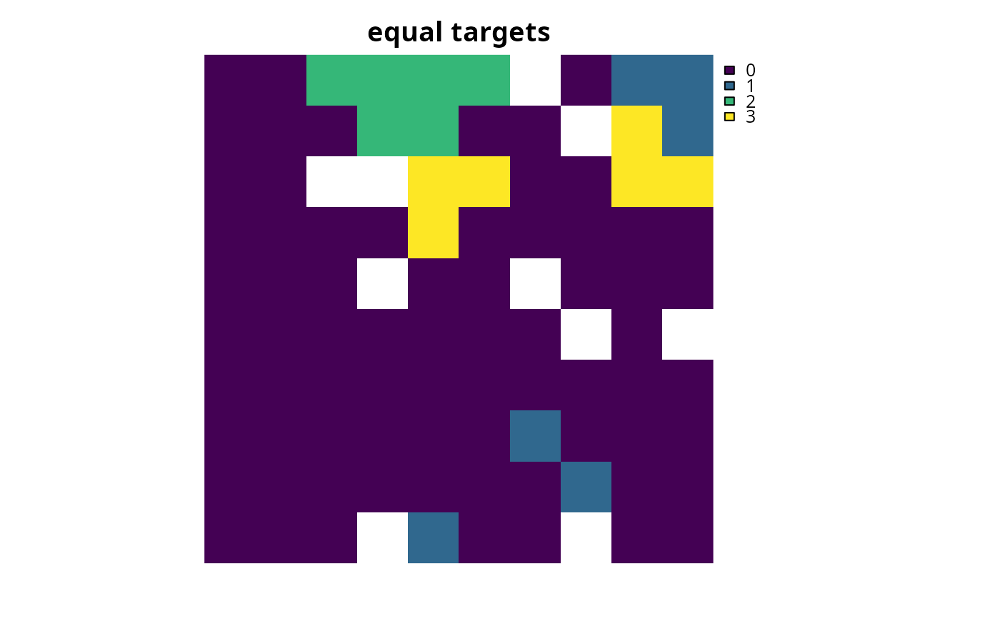

Set targets expressed as the actual value of features in the study area that need to be represented in the prioritization. For instance, setting a target of 10 requires that the solution secure a set of planning units for which their summed feature values are equal to or greater than 10.
# S4 method for ConservationProblem,numeric add_absolute_targets(x, targets) # S4 method for ConservationProblem,matrix add_absolute_targets(x, targets) # S4 method for ConservationProblem,character add_absolute_targets(x, targets)
Arguments
| x |
|
|---|---|
| targets | Object that specifies the targets for each feature. See the Details section for more information. |
Value
ConservationProblem-class object with the targets added
to it.
Details
Targets are used to specify the minimum amount or proportion of a
feature's distribution that needs to be protected. Most conservation
planning problems require targets with the exception of the maximum cover
(see add_max_cover_objective) and maximum utility
(see add_max_utility_objective) problems. Attempting to solve
problems with objectives that require targets without specifying targets
will throw an error.
The targets for a problem can be specified in several different ways:
numericvectorof target values for each feature. Additionally, for convenience, this type of argument can be a single value to assign the same target to each feature. Note that this type of argument cannot be used to specify targets for problems with multiple zones.matrixcontaining a target for each feature in each zone. Here, each row corresponds to a different feature in argument to
x, each column corresponds to a different zone in argument tox, and each cell contains the target value for a given feature that the solution needs to secure in a given zone.charactercontaining the names of fields (columns) in the feature data associated with the argument to
xthat contain targets. This type of argument can only be used when the feature data associated withxis adata.frame. This argument must contain a field (column) name for each zone.
For problems associated with multiple management zones, this function can
be used to set targets that each pertain to a single feature and a single
zone. To set targets which can be met through allocating different
planning units to multiple zones, see the add_manual_targets
function. An example of a target that could be met through allocations
to multiple zones might be where each management zone is expected to
result in a different amount of a feature and the target requires that
the total amount of the feature in all zones must exceed a certain
threshold. In other words, the target does not require that any single
zone secure a specific amount of the feature, but the total amount held
in all zones must secure a specific amount. Thus the target could,
potentially, be met through allocating all planning units to any specific
management zone, or through allocating the planning units to different
combinations of management zones.
See also
Examples
# set seed for reproducibility set.seed(500) # load data data(sim_pu_raster, sim_features, sim_pu_zones_stack, sim_features_zones) # create simple problem p <- problem(sim_pu_raster, sim_features) %>% add_min_set_objective() %>% add_binary_decisions() # create problem with targets to secure 3 amounts for each feature p1 <- p %>% add_absolute_targets(3) # create problem with varying targets for each feature targets <- c(1, 2, 3, 2, 1) p2 <- p %>% add_absolute_targets(targets)#> Optimize a model with 5 rows, 90 columns and 450 nonzeros #> Variable types: 0 continuous, 90 integer (90 binary) #> Coefficient statistics: #> Matrix range [2e-01, 9e-01] #> Objective range [2e+02, 2e+02] #> Bounds range [1e+00, 1e+00] #> RHS range [3e+00, 3e+00] #> Found heuristic solution: objective 2145.2678910 #> Presolve removed 3 rows and 0 columns #> Presolve time: 0.00s #> Presolved: 2 rows, 90 columns, 180 nonzeros #> Variable types: 0 continuous, 90 integer (90 binary) #> Presolved: 2 rows, 90 columns, 180 nonzeros #> #> #> Root relaxation: objective 1.589540e+03, 1 iterations, 0.00 seconds #> #> Nodes | Current Node | Objective Bounds | Work #> Expl Unexpl | Obj Depth IntInf | Incumbent BestBd Gap | It/Node Time #> #> 0 0 1589.53964 0 1 2145.26789 1589.53964 25.9% - 0s #> H 0 0 1661.1365494 1589.53964 4.31% - 0s #> #> Explored 1 nodes (1 simplex iterations) in 0.00 seconds #> Thread count was 1 (of 4 available processors) #> #> Solution count 2: 1661.14 2145.27 #> #> Optimal solution found (tolerance 1.00e-01) #> Best objective 1.661136549371e+03, best bound 1.589539637535e+03, gap 4.3101% #> Optimize a model with 5 rows, 90 columns and 450 nonzeros #> Variable types: 0 continuous, 90 integer (90 binary) #> Coefficient statistics: #> Matrix range [2e-01, 9e-01] #> Objective range [2e+02, 2e+02] #> Bounds range [1e+00, 1e+00] #> RHS range [1e+00, 3e+00] #> Found heuristic solution: objective 1364.1986257 #> Presolve removed 2 rows and 0 columns #> Presolve time: 0.00s #> Presolved: 3 rows, 90 columns, 270 nonzeros #> Variable types: 0 continuous, 90 integer (90 binary) #> Presolved: 3 rows, 90 columns, 270 nonzeros #> #> #> Root relaxation: objective 1.056627e+03, 4 iterations, 0.00 seconds #> #> Nodes | Current Node | Objective Bounds | Work #> Expl Unexpl | Obj Depth IntInf | Incumbent BestBd Gap | It/Node Time #> #> 0 0 1056.62699 0 2 1364.19863 1056.62699 22.5% - 0s #> H 0 0 1223.1573503 1056.62699 13.6% - 0s #> H 0 0 1203.1663645 1056.62699 12.2% - 0s #> 0 0 1057.73734 0 3 1203.16636 1057.73734 12.1% - 0s #> 0 0 1057.80283 0 3 1203.16636 1057.80283 12.1% - 0s #> 0 0 1058.46353 0 5 1203.16636 1058.46353 12.0% - 0s #> 0 0 1058.81005 0 6 1203.16636 1058.81005 12.0% - 0s #> 0 0 1059.11832 0 7 1203.16636 1059.11832 12.0% - 0s #> 0 0 1059.26405 0 7 1203.16636 1059.26405 12.0% - 0s #> 0 0 1059.40704 0 8 1203.16636 1059.40704 11.9% - 0s #> H 0 0 1198.9978032 1059.40704 11.6% - 0s #> 0 0 1060.23890 0 7 1198.99780 1060.23890 11.6% - 0s #> 0 0 1060.39425 0 7 1198.99780 1060.39425 11.6% - 0s #> 0 0 1060.91232 0 6 1198.99780 1060.91232 11.5% - 0s #> 0 0 1060.93753 0 8 1198.99780 1060.93753 11.5% - 0s #> 0 0 1061.07760 0 8 1198.99780 1061.07760 11.5% - 0s #> 0 0 1061.08460 0 9 1198.99780 1061.08460 11.5% - 0s #> 0 0 1061.44304 0 9 1198.99780 1061.44304 11.5% - 0s #> 0 0 1061.49161 0 8 1198.99780 1061.49161 11.5% - 0s #> 0 0 1061.79786 0 8 1198.99780 1061.79786 11.4% - 0s #> 0 0 1061.83910 0 9 1198.99780 1061.83910 11.4% - 0s #> 0 0 1061.86106 0 9 1198.99780 1061.86106 11.4% - 0s #> 0 0 1061.93275 0 10 1198.99780 1061.93275 11.4% - 0s #> 0 0 1061.95846 0 11 1198.99780 1061.95846 11.4% - 0s #> 0 0 1061.98232 0 11 1198.99780 1061.98232 11.4% - 0s #> 0 2 1062.01639 0 11 1198.99780 1062.01639 11.4% - 0s #> H 711 252 1190.9502353 1066.45272 10.5% 1.3 0s #> #> Cutting planes: #> Gomory: 3 #> Cover: 19 #> MIR: 8 #> StrongCG: 10 #> Zero half: 1 #> #> Explored 3533 nodes (4936 simplex iterations) in 0.29 seconds #> Thread count was 1 (of 4 available processors) #> #> Solution count 5: 1190.95 1199 1203.17 ... 1364.2 #> #> Optimal solution found (tolerance 1.00e-01) #> Best objective 1.190950235328e+03, best bound 1.071859173701e+03, gap 9.9997%# create a problem with multiple management zones p3 <- problem(sim_pu_zones_stack, sim_features_zones) %>% add_min_set_objective() %>% add_binary_decisions() # create a problem with targets that specify an equal amount of each feature # to be represented in each zone p4_targets <- matrix(2, nrow = number_of_features(sim_features_zones), ncol = number_of_zones(sim_features_zones), dimnames = list(feature_names(sim_features_zones), zone_names(sim_features_zones))) print(p4_targets)#> zone_1 zone_2 zone_3 #> feature_1 2 2 2 #> feature_2 2 2 2 #> feature_3 2 2 2 #> feature_4 2 2 2 #> feature_5 2 2 2p4 <- p3 %>% add_absolute_targets(p4_targets) # solve problem#> Optimize a model with 105 rows, 270 columns and 1620 nonzeros #> Variable types: 0 continuous, 270 integer (270 binary) #> Coefficient statistics: #> Matrix range [2e-01, 1e+00] #> Objective range [2e+02, 2e+02] #> Bounds range [1e+00, 1e+00] #> RHS range [1e+00, 2e+00] #> Found heuristic solution: objective 4138.7671528 #> Presolve removed 9 rows and 0 columns #> Presolve time: 0.00s #> Presolved: 96 rows, 270 columns, 810 nonzeros #> Variable types: 0 continuous, 270 integer (270 binary) #> Presolved: 96 rows, 270 columns, 810 nonzeros #> #> #> Root relaxation: objective 3.352717e+03, 28 iterations, 0.00 seconds #> #> Nodes | Current Node | Objective Bounds | Work #> Expl Unexpl | Obj Depth IntInf | Incumbent BestBd Gap | It/Node Time #> #> 0 0 3352.71666 0 4 4138.76715 3352.71666 19.0% - 0s #> H 0 0 3663.0326268 3352.71666 8.47% - 0s #> #> Explored 1 nodes (28 simplex iterations) in 0.00 seconds #> Thread count was 1 (of 4 available processors) #> #> Solution count 2: 3663.03 4138.77 #> #> Optimal solution found (tolerance 1.00e-01) #> Best objective 3.663032626820e+03, best bound 3.352716664713e+03, gap 8.4716%# plot solution (pixel values correspond to zone identifiers) plot(category_layer(s4), main = c("equal targets"))# create a problem with targets that require a varying amount of each # feature to be represented in each zone p5_targets <- matrix(rpois(15, 1), nrow = number_of_features(sim_features_zones), ncol = number_of_zones(sim_features_zones), dimnames = list(feature_names(sim_features_zones), zone_names(sim_features_zones))) print(p5_targets)#> zone_1 zone_2 zone_3 #> feature_1 2 0 0 #> feature_2 1 1 2 #> feature_3 3 3 2 #> feature_4 1 2 0 #> feature_5 2 1 1p5 <- p3 %>% add_absolute_targets(p4_targets) # solve problem#> Optimize a model with 105 rows, 270 columns and 1620 nonzeros #> Variable types: 0 continuous, 270 integer (270 binary) #> Coefficient statistics: #> Matrix range [2e-01, 1e+00] #> Objective range [2e+02, 2e+02] #> Bounds range [1e+00, 1e+00] #> RHS range [1e+00, 2e+00] #> Found heuristic solution: objective 4138.7671528 #> Presolve removed 9 rows and 0 columns #> Presolve time: 0.00s #> Presolved: 96 rows, 270 columns, 810 nonzeros #> Variable types: 0 continuous, 270 integer (270 binary) #> Presolved: 96 rows, 270 columns, 810 nonzeros #> #> #> Root relaxation: objective 3.352717e+03, 28 iterations, 0.00 seconds #> #> Nodes | Current Node | Objective Bounds | Work #> Expl Unexpl | Obj Depth IntInf | Incumbent BestBd Gap | It/Node Time #> #> 0 0 3352.71666 0 4 4138.76715 3352.71666 19.0% - 0s #> H 0 0 3663.0326268 3352.71666 8.47% - 0s #> #> Explored 1 nodes (28 simplex iterations) in 0.00 seconds #> Thread count was 1 (of 4 available processors) #> #> Solution count 2: 3663.03 4138.77 #> #> Optimal solution found (tolerance 1.00e-01) #> Best objective 3.663032626820e+03, best bound 3.352716664713e+03, gap 8.4716%# plot solution (pixel values correspond to zone identifiers) plot(category_layer(s5), main = c("varying targets"))